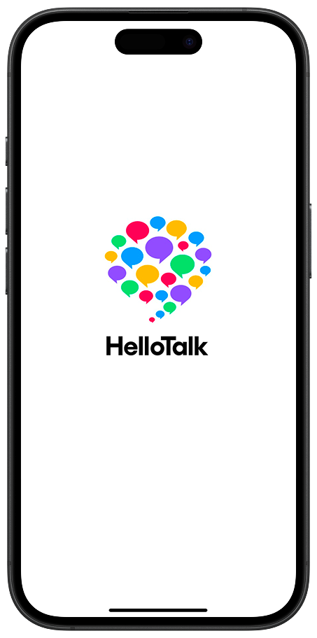

あなたへのアドバイス
一人学習より相手のいる学習が最適。
実際に外に足を踏み出して英会話カフェや学内の国際交流に身を置くことがおススメ。最初はなかなか一歩を踏み出しにくいですがスピーキングの上達は人を介してでしか向上しにくい特徴があります。また一回英会話カフェや国際交流に身を置いてしまえば後悔しないです！いってよかった！という気持ちに必ずなりますので是非勇気を出してみて！
今からできることは？

【HelloTalk】
世界中の人とつながれるアプリ。個人的にHelloTalkでたくさんスピーキングの練習をしたので是非おススメ。最初は話し相手が見つかりにくいかもだけど、"Give & Take"の精神があればだれでも人気者になれる！
Instagramの親しい友達
親しい友達に英語を共に頑張っている人や英語を喋る人をいれて日々の出来事をつぶやいてみてください。誰かが見ていてくれているという気持ちから案外モチベがわいてきます。
私は英語勉強に熱心な日本人・留学生・HelloTalkで出会った仲のいい人を親しい友達リストに入れて毎日英語で発信していました。例えば今日行った場所、思った事、楽しかった思い出なと…